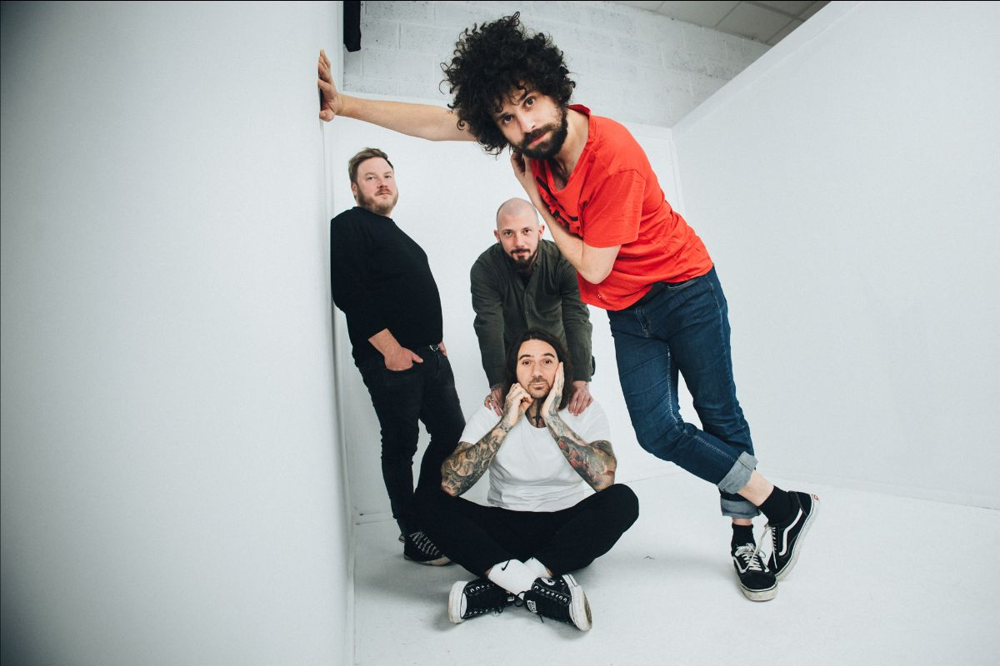

[E]l ruido no pide permiso, se toma. La maquinaria suiza del noise-rock y hardcore experimental, COILGUNS, confirma su regreso a territorio mexicano para mayo de 2026. Tras sembrar el caos en su primera visita, el cuarteto regresa para reclamar el escenario en una gira de tres fechas que promete fracturar los tímpanos de Guadalajara, Querétaro y la CDMX.
Esta reincidencia sonora no es casualidad. Coilguns ha forjado un vínculo de sangre con el público local, cimentado en la urgencia del punk y la exploración DIY. En esta ocasión, la gira producida por Rock Hard Productions suma artillería pesada nacional: Joliette y Tresseises serán los encargados de escoltar este asalto internacional, consolidando un puente indestructible entre la escena suiza y la mexicana.

Con el impulso de su cuarto álbum de estudio, "Odd Love" (2024) —un material grabado en Noruega bajo la supervisión de Scott Evans y mezclado por Tom Dalgety—, la banda llega en su punto más álgido. Su historia, ligada al sello de culto Humus Records, es el testimonio de dos décadas de resistencia musical que ahora convergen en tres noches de colapso auditivo.